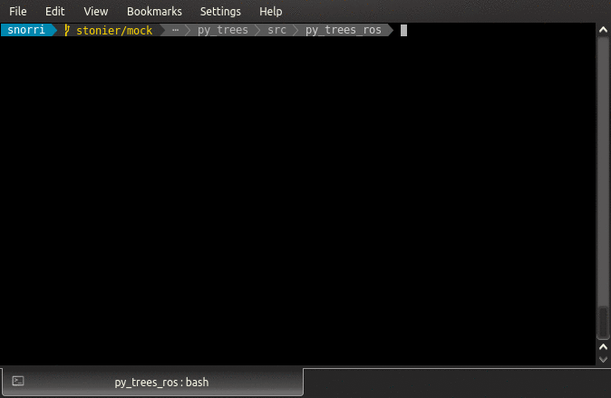
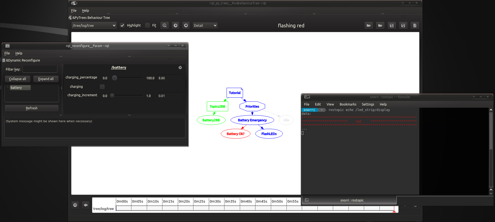
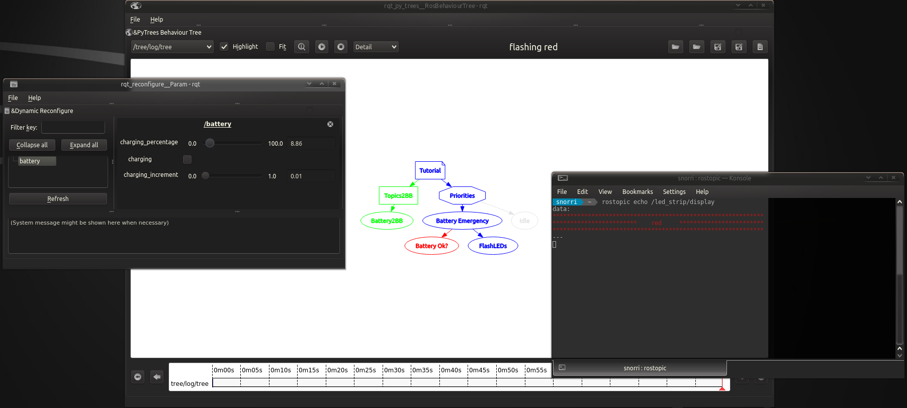

Tutorials¶
Dependencies¶
The tutorials require installation of a few graphical dependencies that would otherwise unnecessarily explode the requirements of the core package and modules. e.g. for kinetic:
sudo apt install ros-kinetic-rqt-py-trees ros-kinetic-rqt-reconfigure
The Mock Robot¶
The tutorials here all run atop a very simple mock robot with the following features:
- Battery
- LED Strip
- Move Base Action Server
- Rotation Action Server
This mock robot could just as easily be replaced by a gazebo simulated robot or even real robot with the same ROS API abstraction layer.
The tutorials take care of launching the mock robot, but it can be launched on its own with:
1 2 3 4 5 6 | <launch>
<node pkg="py_trees_ros" name="move_base" type="mock_component" args="move_base.MoveBase"/>
<node pkg="py_trees_ros" name="rotate" type="mock_component" args="rotate.Rotate"/>
<node pkg="py_trees_ros" name="battery" type="mock_battery"/>
<node pkg="py_trees_ros" name="led_strip" type="mock_led_strip"/>
</launch>
|
Tutorial 1 - Data Gathering¶
About¶
In this, the first of the tutorials, we start out by using a behaviour to collect battery data from a ros subscribers and cache the result on the blackboard for other behaviours to utilise.
This is a fairly common thing to do - it takes the asynchronicity out of the subscriber callbacks and when it comes to sharing the data, it is far simpler to access the blackboard than to manage multiple subscribers from all over the behaviour tree. Usually you will end up with a collection of data gatherers at the front end of your behaviour tree which will always run and will happen before any decision branching can occur in the tree.
Tree¶
![digraph tutorial {
graph [fontname="times-roman"];
node [fontname="times-roman"];
edge [fontname="times-roman"];
Tutorial [fillcolor=gold, fontcolor=black, fontsize=11, shape=note, style=filled];
Topics2BB [fillcolor=orange, fontcolor=black, fontsize=11, shape=box, style=filled];
Tutorial -> Topics2BB;
Battery2BB [fillcolor=gray, fontcolor=black, fontsize=11, shape=ellipse, style=filled];
Topics2BB -> Battery2BB;
Priorities [fillcolor=cyan, fontcolor=black, fontsize=11, shape=octagon, style=filled];
Tutorial -> Priorities;
Idle [fillcolor=gray, fontcolor=black, fontsize=11, shape=ellipse, style=filled];
Priorities -> Idle;
}](_images/graphviz-ca9683b4f79e9e7859b938aa9648f1a381a1c24c.png)
1 2 3 4 5 6 7 8 9 10 11 12 13 14 15 16 17 18 19 20 21 22 23 | def create_root():
"""
Create a basic tree and start a 'Topics2BB' work sequence that
takes the asynchronicity out of subscription.
Returns:
:class:`~py_trees.behaviour.Behaviour`: the root of the tree
"""
root = py_trees.composites.Parallel("Tutorial")
topics2bb = py_trees.composites.Sequence("Topics2BB")
battery2bb = py_trees_ros.battery.ToBlackboard(name="Battery2BB",
topic_name="/battery/state",
threshold=30.0
)
priorities = py_trees.composites.Selector("Priorities")
idle = py_trees.behaviours.Running(name="Idle")
root.add_child(topics2bb)
topics2bb.add_child(battery2bb)
root.add_child(priorities)
priorities.add_child(idle)
return root
|
Along with the data gathering side, you’ll also notice the dummy branch for
priority jobs (complete with idle behaviour that is always
RUNNING). This configuration is typical
of the data gathering pattern.
Behaviours¶
The tree makes use of the py_trees_ros.battery.ToBlackboard behaviour.
1 2 3 4 5 6 7 8 9 10 11 12 13 14 15 16 17 18 19 20 21 22 23 24 25 26 27 28 29 30 31 32 33 34 35 36 37 38 39 40 41 42 43 44 45 46 47 48 49 50 51 | class ToBlackboard(subscribers.ToBlackboard):
"""
Subscribes to the battery message and writes battery data to the blackboard.
Also adds a warning flag to the blackboard if the battery
is low - note that it does some buffering against ping-pong problems so the warning
doesn't trigger on/off rapidly when close to the threshold.
When ticking, updates with :attr:`~py_trees.common.Status.RUNNING` if it got no data,
:attr:`~py_trees.common.Status.SUCCESS` otherwise.
Blackboard Variables:
* battery (:class:`sensor_msgs.msg.BatteryState`)[w]: the raw battery message
* battery_low_warning (:obj:`bool`)[w]: False if battery is ok, True if critically low
Args:
name (:obj:`str`): name of the behaviour
topic_name (:obj:`str`) : name of the battery state topic
threshold (:obj:`float`) : percentage level threshold for flagging as low (0-100)
"""
def __init__(self, name, topic_name="/battery/state", threshold=30.0):
super(ToBlackboard, self).__init__(name=name,
topic_name=topic_name,
topic_type=sensor_msgs.BatteryState,
blackboard_variables={"battery": None},
clearing_policy=py_trees.common.ClearingPolicy.NEVER
)
self.blackboard = py_trees.blackboard.Blackboard()
self.blackboard.battery = sensor_msgs.BatteryState()
self.blackboard.battery.percentage = 0.0
self.blackboard.battery.power_supply_status = sensor_msgs.BatteryState.POWER_SUPPLY_STATUS_UNKNOWN
self.blackboard.battery_low_warning = False # decision making
self.threshold = threshold
def update(self):
"""
Call the parent to write the raw data to the blackboard and then check against the
threshold to determine if the low warning flag should also be updated.
"""
self.logger.debug("%s.update()" % self.__class__.__name__)
status = super(ToBlackboard, self).update()
if status != py_trees.common.Status.RUNNING:
# we got something
if self.blackboard.battery.percentage > self.threshold + 5.0:
self.blackboard.battery_low_warning = False
elif self.blackboard.battery.percentage < self.threshold:
self.blackboard.battery_low_warning = True
rospy.logwarn_throttle(60, "%s: battery level is low!" % self.name)
# else don't do anything in between - i.e. avoid the ping pong problems
self.feedback_message = "Battery level is low" if self.blackboard.battery_low_warning else "Battery level is ok"
return status
|
This behaviour will cause the entire tree will tick over with
SUCCESS so long as there is data incoming.
If there is no data incoming, it will simply
block and prevent the rest of the tree from acting.
Running¶
$ roslaunch py_trees_ros tutorial_one.launch --screen
A glimpse of the blackboard with battery updates:
Tutorial 2 - Adding a Battery Check¶
About¶
Here we add the first decision. What to do if the battery is low? For this, we’ll get the robot to flash it’s led strip.
Tree¶
![digraph tutorial {
graph [fontname="times-roman"];
node [fontname="times-roman"];
edge [fontname="times-roman"];
Tutorial [fillcolor=gold, fontcolor=black, fontsize=11, shape=note, style=filled];
Topics2BB [fillcolor=orange, fontcolor=black, fontsize=11, shape=box, style=filled];
Tutorial -> Topics2BB;
Battery2BB [fillcolor=gray, fontcolor=black, fontsize=11, shape=ellipse, style=filled];
Topics2BB -> Battery2BB;
Priorities [fillcolor=cyan, fontcolor=black, fontsize=11, shape=octagon, style=filled];
Tutorial -> Priorities;
"Battery Emergency" [fillcolor=ghostwhite, fontcolor=black, fontsize=11, shape=ellipse, style=filled];
Priorities -> "Battery Emergency";
"Battery Ok?" [fillcolor=gray, fontcolor=black, fontsize=11, shape=ellipse, style=filled];
"Battery Emergency" -> "Battery Ok?";
FlashLEDs [fillcolor=gray, fontcolor=black, fontsize=11, shape=ellipse, style=filled];
"Battery Emergency" -> FlashLEDs;
Idle [fillcolor=gray, fontcolor=black, fontsize=11, shape=ellipse, style=filled];
Priorities -> Idle;
}](_images/graphviz-7770bd116a310d71f3d2218d1edda422c272923b.png)
The white coloured ellipse shown here is a decorated behaviour (in this
case a Selector with the success_is_failure()
decorator (looking forward to better visualisations for this in the future).
1 2 3 4 5 6 7 8 9 10 11 12 13 14 15 16 17 18 19 20 21 22 23 24 25 26 | def create_root():
# behaviours
root = py_trees.composites.Parallel("Tutorial")
topics2bb = py_trees.composites.Sequence("Topics2BB")
battery2bb = py_trees_ros.battery.ToBlackboard(name="Battery2BB",
topic_name="/battery/state",
threshold=30.0
)
priorities = py_trees.composites.Selector("Priorities")
battery_check = py_trees.meta.success_is_failure(py_trees.composites.Selector)(name="Battery Emergency")
is_battery_ok = py_trees.blackboard.CheckBlackboardVariable(
name="Battery Ok?",
variable_name='battery_low_warning',
expected_value=False
)
flash_led_strip = py_trees_ros.tutorials.behaviours.FlashLedStrip(
name="FlashLEDs",
colour="red")
idle = py_trees.behaviours.Running(name="Idle")
# tree
root.add_children([topics2bb, priorities])
topics2bb.add_child(battery2bb)
priorities.add_children([battery_check, idle])
battery_check.add_children([is_battery_ok, flash_led_strip])
return root
|
Here we’ve added a high priority branch for dealing with a low battery that causes the hardware strip to flash.
An important point here is to make sure that the flashing behaviour gets
invalidated as soon as the battery becomes ok again. This will trigger the
flashing behaviour’s terminate method (see below) to send off a command to
clear the request. To do this we’ve made use of a higher priority ‘Is Battery Ok?’
check underneath the selector, but also had to decorate the selector with
success_is_failure() to make sure the priority branch is chosen appropriately.
You could have also designed this particular subtree with sequences and parallels instead of the selector and decorator here.
Tip
When designing, it’s very useful to get a visual on what you are doing, even before you actually execute or implement anything more than a tree of skeleton behaviours. For this tutorial, you can render with:
py-trees-render py_trees_ros.tutorials.two.create_root
Behaviours¶
Introducing the flashing behaviour!
1 2 3 4 5 6 7 8 9 10 11 12 13 14 15 16 17 18 19 20 21 22 23 24 25 26 27 28 29 30 31 32 33 34 35 36 37 38 39 40 41 42 43 44 45 46 47 48 49 50 51 | class FlashLedStrip(py_trees.behaviour.Behaviour):
"""
This behavoiur simply shoots a command off to the LEDStrip to flash
a certain colour and returns :attr:`~py_trees.common.Status.RUNNING`.
Note that this behaviour will never return with
:attr:`~py_trees.common.Status.SUCCESS` but will send a clearing
command to the LEDStrip if it is cancelled or interrupted by a higher
priority behaviour.
Args:
name (:obj:`str`): name of the behaviour
topic_name (:obj:`str`) : name of the battery state topic
colour (:obj:`str`) : colour to flash ['red', 'green', blue']
"""
def __init__(self, name, topic_name="/led_strip/command", colour="red"):
super(FlashLedStrip, self).__init__(name=name)
self.topic_name = topic_name
self.colour = colour
def setup(self, timeout):
"""
Args:
timeout (:obj:`float`): time to wait (0.0 is blocking forever)
Returns:
:obj:`bool`: whether it timed out trying to setup
"""
self.publisher = rospy.Publisher(self.topic_name, std_msgs.String, queue_size=10, latch=True)
self.feedback_message = "setup"
return True
def update(self):
"""
Annoy the led strip to keep firing every time it ticks over (the led strip will clear itself
if no command is forthcoming within a certain period of time). This behaviour will only finish if it
is terminated or interrupted from above.
"""
self.logger.debug("%s.update()" % self.__class__.__name__)
self.publisher.publish(std_msgs.String(self.colour))
self.feedback_message = "flashing {0}".format(self.colour)
return py_trees.common.Status.RUNNING
def terminate(self, new_status):
"""
Shoot off a clearing command to the led strip.
Args:
new_status (:class:`~py_trees.common.Status`): the behaviour is transitioning to this new status
"""
self.publisher.publish(std_msgs.String(""))
self.feedback_message = "cleared"
|
A new feature here is the way it uses the terminate method to put a ‘fullstop’
to the commands sent when ticking. Note also that it is permanently in the
RUNNING state while ticking. Behaviours do
not have to return SUCCESS or
FAILURE, they can be just as involved in the
decision making via the way they behave when cancelled or interrupted.
Running¶
$ roslaunch py_trees_ros tutorial_two.launch --screen
Then play around with the battery level in dynamic reconfigure to trigger the decision branching:
 

Tutorial 3 - Blackboards!¶
About¶
Tutorial three is a repeat of Tutorial 2 - Adding a Battery Check. The purpose of this
tutorial however is to introduce the publishers and services provided to
allow introspection of the blackboard from ROS. Publishers and services
are provided by the Blackboard Exchange
embedded in the ROS Behaviour Tree
and interaction via the py-trees-blackboard-watcher command line utility.
Running¶
Launch the tutorial:
$ roslaunch py_trees_ros tutorial_three.launch --screen
In another shell:
# check the entire board
$ rostopic echo /tree/blackboard
# determine what you may stream
$ py-trees-blackboard-watcher --list-variables
# pull a simple variable
$ py-trees-blackboard-watcher battery_low_warning
# drill down to get a variable
$ py-trees-blackboard-watcher battery/percentage

Tutorial 4 - Introspecting the Tree¶
About¶
Again, this is a repeat of Tutorial 2 - Adding a Battery Check. The
ROS Behaviour Tree used in these
tutorials provide several ROS connections for tree introspection. We will walkthrough
several of these here:
Running¶
Launch
$ roslaunch py_trees_ros tutorial_four.launch --screen
Shell Introspection
# identify the tree publishers
$ rostopic list | grep tree
# a static ascii view of the tree
$ rostopic echo /tree/ascii/tree
# a dynamic view of the tree, with current states and feedback messages
# rostopic echo /tree/ascii/snaphots
$ at what behaviour did decision making turn around and why? often useful for other programs to know
# rostopic echo /tree/tip
and of course the blackboard topics, but they were covered in tutorial three.

RQT Visualisation
There is one more topic that provides the complete set of data for a tree state, that is ~/log/tree.
This is not very human readable (typically very large), but can be used for other tools such as
rqt-py-trees.
While not in this package itself, it’s worth taking some time out to discover what it can do here.
- Coloured States : GREEN for
SUCCESS, RED forFAILURE, BLUE forRUNNINGand GREY for unvisited. - Tooltips : hover over a behaviour to catch name, type, status and feedback message information
- Timeline : rewind as you wish, note the bars indicating where important events occured
- Fit : disable auto-resizing by unchecking the ‘Fit’ button to handle large trees which become unreadable in a small window

Tutorial 5 - Action Clients¶
About¶
A few new items arriving in tantalising bowls of flying spaghetti here:
- A gui for manually triggering events
- A gui (same one) for visualising the led strip status
- A lower priority work branch triggered from the gui
- A first action client behaviour
- A kind of pre-emption, via behaviour tree decision logic
Tree¶
![digraph tutorial {
graph [fontname="times-roman"];
node [fontname="times-roman"];
edge [fontname="times-roman"];
Tutorial [fillcolor=gold, fontcolor=black, fontsize=11, shape=note, style=filled];
Topics2BB [fillcolor=orange, fontcolor=black, fontsize=11, shape=box, style=filled];
Tutorial -> Topics2BB;
Scan2BB [fillcolor=gray, fontcolor=black, fontsize=11, shape=ellipse, style=filled];
Topics2BB -> Scan2BB;
Battery2BB [fillcolor=gray, fontcolor=black, fontsize=11, shape=ellipse, style=filled];
Topics2BB -> Battery2BB;
Priorities [fillcolor=cyan, fontcolor=black, fontsize=11, shape=octagon, style=filled];
Tutorial -> Priorities;
"Battery Emergency" [fillcolor=ghostwhite, fontcolor=black, fontsize=11, shape=ellipse, style=filled];
Priorities -> "Battery Emergency";
"Battery Ok?" [fillcolor=gray, fontcolor=black, fontsize=11, shape=ellipse, style=filled];
"Battery Emergency" -> "Battery Ok?";
"Flash Red" [fillcolor=gray, fontcolor=black, fontsize=11, shape=ellipse, style=filled];
"Battery Emergency" -> "Flash Red";
Scan [fillcolor=orange, fontcolor=black, fontsize=11, shape=box, style=filled];
Priorities -> Scan;
"Scan?" [fillcolor=gray, fontcolor=black, fontsize=11, shape=ellipse, style=filled];
Scan -> "Scan?";
"Preempt?" [fillcolor=cyan, fontcolor=black, fontsize=11, shape=octagon, style=filled];
Scan -> "Preempt?";
"Scan?*" [fillcolor=gray, fontcolor=black, fontsize=11, shape=ellipse, style=filled];
"Preempt?" -> "Scan?*";
Scanning [fillcolor=gold, fontcolor=black, fontsize=11, shape=note, style=filled];
"Preempt?" -> Scanning;
Rotate [fillcolor=gray, fontcolor=black, fontsize=11, shape=ellipse, style=filled];
Scanning -> Rotate;
"Flash Blue" [fillcolor=gray, fontcolor=black, fontsize=11, shape=ellipse, style=filled];
Scanning -> "Flash Blue";
Celebrate [fillcolor=gold, fontcolor=black, fontsize=11, shape=note, style=filled];
Scan -> Celebrate;
"Flash Green" [fillcolor=gray, fontcolor=black, fontsize=11, shape=ellipse, style=filled];
Celebrate -> "Flash Green";
Pause [fillcolor=gray, fontcolor=black, fontsize=11, shape=ellipse, style=filled];
Celebrate -> Pause;
Idle [fillcolor=gray, fontcolor=black, fontsize=11, shape=ellipse, style=filled];
Priorities -> Idle;
}](_images/graphviz-e5d042ff0ca77c3beeff8c286b8afddbc7e8a960.png)
1 2 3 4 5 6 7 8 9 10 11 12 13 14 15 16 17 18 19 20 21 22 23 24 25 26 27 28 29 30 31 32 33 34 35 36 37 38 39 40 41 42 43 44 45 46 47 48 49 50 51 52 53 54 55 56 57 58 | def create_root():
# behaviours
root = py_trees.composites.Parallel("Tutorial")
topics2bb = py_trees.composites.Sequence("Topics2BB")
scan2bb = py_trees_ros.subscribers.EventToBlackboard(
name="Scan2BB",
topic_name="/dashboard/scan",
variable_name="event_scan_button"
)
battery2bb = py_trees_ros.battery.ToBlackboard(name="Battery2BB",
topic_name="/battery/state",
threshold=30.0
)
priorities = py_trees.composites.Selector("Priorities")
battery_check = py_trees.meta.success_is_failure(py_trees.composites.Selector)(name="Battery Emergency")
is_battery_ok = py_trees.blackboard.CheckBlackboardVariable(
name="Battery Ok?",
variable_name='battery_low_warning',
expected_value=False
)
flash_led_strip = py_trees_ros.tutorials.behaviours.FlashLedStrip(
name="Flash Red",
colour="red")
scan = py_trees.composites.Sequence(name="Scan")
is_scan_requested = py_trees.blackboard.CheckBlackboardVariable(
name="Scan?",
variable_name='event_scan_button',
expected_value=True
)
scan_preempt = py_trees.composites.Selector(name="Preempt?")
is_scan_requested_two = py_trees.meta.success_is_running(py_trees.blackboard.CheckBlackboardVariable)(
name="Scan?",
variable_name='event_scan_button',
expected_value=True
)
scanning = py_trees.composites.Parallel(name="Scanning", policy=py_trees.common.ParallelPolicy.SUCCESS_ON_ONE)
scan_rotate = py_trees_ros.actions.ActionClient(
name="Rotate",
action_namespace="/rotate",
action_spec=py_trees_msgs.RotateAction,
action_goal=py_trees_msgs.RotateGoal()
)
scan_flash_blue = py_trees_ros.tutorials.behaviours.FlashLedStrip(name="Flash Blue", colour="blue")
scan_celebrate = py_trees.composites.Parallel(name="Celebrate", policy=py_trees.common.ParallelPolicy.SUCCESS_ON_ONE)
scan_flash_green = py_trees_ros.tutorials.behaviours.FlashLedStrip(name="Flash Green", colour="green")
scan_pause = py_trees.timers.Timer("Pause", duration=3.0)
idle = py_trees.behaviours.Running(name="Idle")
# tree
root.add_children([topics2bb, priorities])
topics2bb.add_children([scan2bb, battery2bb])
priorities.add_children([battery_check, scan, idle])
battery_check.add_children([is_battery_ok, flash_led_strip])
scan.add_children([is_scan_requested, scan_preempt, scan_celebrate])
scan_preempt.add_children([is_scan_requested_two, scanning])
scanning.add_children([scan_rotate, scan_flash_blue])
scan_celebrate.add_children([scan_flash_green, scan_pause])
|
Guards
![digraph tutorial {
graph [fontname="times-roman"];
node [fontname="times-roman"];
edge [fontname="times-roman"];
"Scan (Guard)" [fillcolor=orange, fontcolor=black, fontsize=11, shape=box, style=filled];
"Scan?" [fillcolor=gray, fontcolor=black, fontsize=11, shape=ellipse, style=filled];
"Scan (Guard)" -> "Scan?";
"Preempt?" [fillcolor=gray20, fontcolor=dodgerblue, fontsize=11, shape=box, style=filled];
"Scan (Guard)" -> "Preempt?";
}](_images/graphviz-45597a02d828988c85c16d5d3fb7bb0c6fbce771.png)
The entire scan branch is protected by a guard (note that the blackbox in the above diagram is exactly that, a black box representing the lower part of the tree). Once the scan event is received, this branch gets to work until it either finishes, or is pre-empted by the higher priority low battery branch.
A Kind of Preemption
![digraph tutorial {
graph [fontname="times-roman"];
node [fontname="times-roman"];
edge [fontname="times-roman"];
"Preempt?" [fillcolor=cyan, fontcolor=black, fontsize=11, shape=octagon, style=filled];
"Scan?\n(Success is Running)" [fillcolor=gray, fontcolor=black, fontsize=11, shape=ellipse, style=filled];
"Preempt?" -> "Scan?\n(Success is Running)";
Scanning [fillcolor=gold, fontcolor=black, fontsize=11, shape=note, style=filled];
"Preempt?" -> Scanning;
Rotate [fillcolor=gray, fontcolor=black, fontsize=11, shape=ellipse, style=filled];
Scanning -> Rotate;
"Flash Blue" [fillcolor=gray, fontcolor=black, fontsize=11, shape=ellipse, style=filled];
Scanning -> "Flash Blue";
}](_images/graphviz-4f73368b57d239a9720988bcc379a280b04b4aca.png)
The second part of the tree enables a kind of pre-emption on the scanning action. If a new request comes in, it will trigger the secondary scan event check, invalidating whatever scanning action was currently running. This will clear the led command and cancel the rotate action. On the next tick, the scan event check will fail (it was consumed on the last tick) and the scanning will restart.
Note
This is not true pre-emption since it cancels the rotate action and restarts it. It is however, exactly the pattern that is required in many instances. For true pre-emption you could bundle both scan check and rotation action in the same behaviour or dynamically insert action goals on the fly from the parent class.
Handling Failure
If the rotate action should fail, then the whole branch will also fail. Subsequently
dropping the robot back to its idle state. A failure event could be generated by
simply watching either the ‘Scanning’ parallel or the tip()
of the tree and reacting to it’s state change.
Behaviours¶
Introducing the rotate action client behaviour!
1 2 3 4 5 6 | scan_rotate = py_trees_ros.actions.ActionClient(
name="Rotate",
action_namespace="/rotate",
action_spec=py_trees_msgs.RotateAction,
action_goal=py_trees_msgs.RotateGoal()
)
|
1 2 3 4 5 6 7 8 9 10 11 12 13 14 15 16 17 18 19 20 21 22 23 24 25 26 27 28 29 30 31 32 33 34 35 36 37 38 39 40 41 42 43 44 45 46 47 48 49 50 51 52 53 54 55 56 57 58 59 60 61 62 63 64 65 66 67 68 69 70 71 72 73 74 75 76 77 78 79 80 81 82 83 84 85 86 87 88 89 90 91 92 93 94 | class ActionClient(py_trees.behaviour.Behaviour):
"""
A generic action client interface. This simply sends a pre-configured
goal to the action client.
Cases where you might want to subclass and extend this behaviour:
* Update the goal data in :meth:`~py_trees_ros.actions.ActionClient.initialise()`
* e.g. use blackboard data to determine the new characteristics of your goal
* Trigger true pre-emption by sending a new goal in :meth:`~py_trees_ros.actions.ActionClient.update()`
Args:
name (:obj:`str`): name of the behaviour
action_spec (:obj:`any`): spec type for the action (e.g. move_base_msgs.msg.MoveBaseAction)
action_goal (:obj:`any`): preconfigured action goal (e.g. move_base_msgs.msg.MoveBaseGoal())
action_namespace (:obj:`str`): where you can find the action topics
"""
def __init__(self, name="Action Client", action_spec=None, action_goal=None, action_namespace="/action"):
super(ActionClient, self).__init__(name)
self.action_client = None
self.sent_goal = False
self.action_spec = action_spec
self.action_goal = action_goal
self.action_namespace = action_namespace
def setup(self, timeout):
"""
Args:
timeout (:obj:`float`): time to wait (0.0 is blocking forever)
Returns:
:obj:`bool`: whether it timed out trying to setup
"""
self.logger.debug("%s.setup()" % self.__class__.__name__)
self.action_client = actionlib.SimpleActionClient(
self.action_namespace,
self.action_spec
)
if not self.action_client.wait_for_server(rospy.Duration(timeout)):
self.logger.error("{0}.setup() could not connect to the rotate action server at '{1}'".format(self.__class__.__name__, self.action_namespace))
self.action_client = None
return False
return True
def initialise(self):
"""
Reset the internal variables.
"""
self.logger.debug("{0}.initialise()".format(self.__class__.__name__))
self.sent_goal = False
def update(self):
"""
Check only to see whether the underlying action server has
succeeded, is running, or has cancelled/aborted for some reason and
map these to the usual behaviour return states.
"""
self.logger.debug("{0}.update()".format(self.__class__.__name__))
if not self.action_client:
self.feedback_message = "no action client, did you call setup() on your tree?"
return py_trees.Status.INVALID
# pity there is no 'is_connected' api like there is for c++
if not self.sent_goal:
self.action_client.send_goal(self.action_goal)
self.sent_goal = True
self.feedback_message = "sent goal to the action server"
return py_trees.Status.RUNNING
if self.action_client.get_state() == actionlib_msgs.GoalStatus.ABORTED:
result = self.action_client.get_result()
self.feedback_message = result.message
return py_trees.Status.FAILURE
result = self.action_client.get_result()
if result:
self.feedback_message = "goal reached"
return py_trees.Status.SUCCESS
else:
self.feedback_message = "moving"
return py_trees.Status.RUNNING
def terminate(self, new_status):
"""
If running and the current goal has not already succeeded, cancel it.
Args:
new_status (:class:`~py_trees.common.Status`): the behaviour is transitioning to this new status
"""
self.logger.debug("%s.terminate(%s)" % (self.__class__.__name__, "%s->%s" % (self.status, new_status) if self.status != new_status else "%s" % new_status))
if self.action_client is not None and self.sent_goal:
motion_state = self.action_client.get_state()
if ((motion_state == actionlib_msgs.GoalStatus.PENDING) or (motion_state == actionlib_msgs.GoalStatus.ACTIVE) or
(motion_state == actionlib_msgs.GoalStatus.PREEMPTING) or (motion_state == actionlib_msgs.GoalStatus.RECALLING)):
self.action_client.cancel_goal()
self.sent_goal = False
|
The ActionClient is a generic template that can be used as
a drop-in for very simply monitoring the aborted/cancelled/running/success state of an
underlying controller with a pre-configured goal. See the api
for details on when/how you might wish to extend this.
Running¶
$ roslaunch py_trees_ros tutorial_five.launch --screen
Playing with the Spaghetti
- Press the scan button to start a scan
- Press the scan button again while mid-scanning to pre-empt
- Set battery low in reconfigure whilst mid-scanning to priority switch

Tutorial 6 - Global Abort Branch¶
Tutorial 7 - Dynamic Priority Branches¶
TODO
Tutorial 8 - Bags¶
TODO - Visualisation handles and bagging, replaying (in running section)